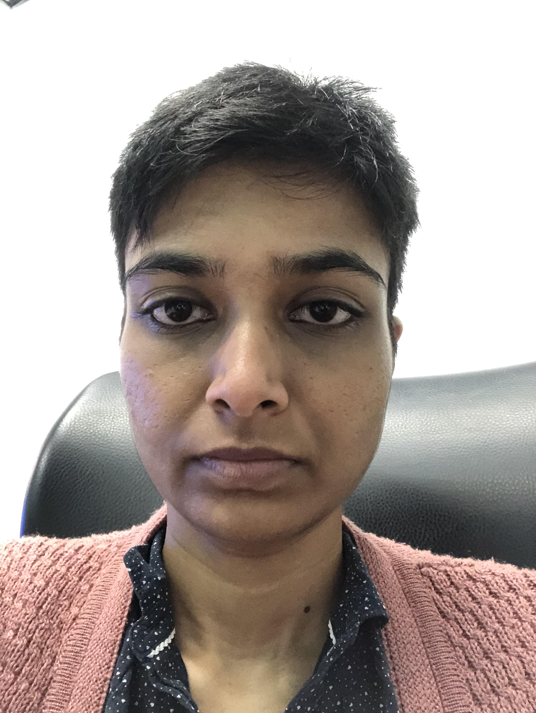

Divya K R

Description
2+ years in retail/e-commerce where I worked closely with customers, top vendors/brands and category. Skilled in Supply Chain Management, Project Management, Business Analytics, Marketing. Master of Business Administration in Operations Management from Alliance University.
Currently pursuing a course in software development.
Work experience
- Amazon- Catalog Assistant
- Worked in Inbound Support Services and Andon which involved solving inbounding issues and defects.
- Worked closely with the category and the vendors.
- Cloudtail India Private Ltd
- Handled operations from Purchase Order to Payments for TV category vendors for one of the biggest sellers on Amazon.
- Later was in Inbound Support Services, where I had to solve various inbounding problems across Fulfillment Centers
- Decathlon Sports India
- Was in-store Sales Manager where I had to forecast and take care of inventory for Domyos Women’s Dept.
Education
- Alliance University, Bangalore- MBA in Operations Management
- GITAM University, Visakhapatnam- B.Tech in Mechanical Engineering(Manufacturing and Management)